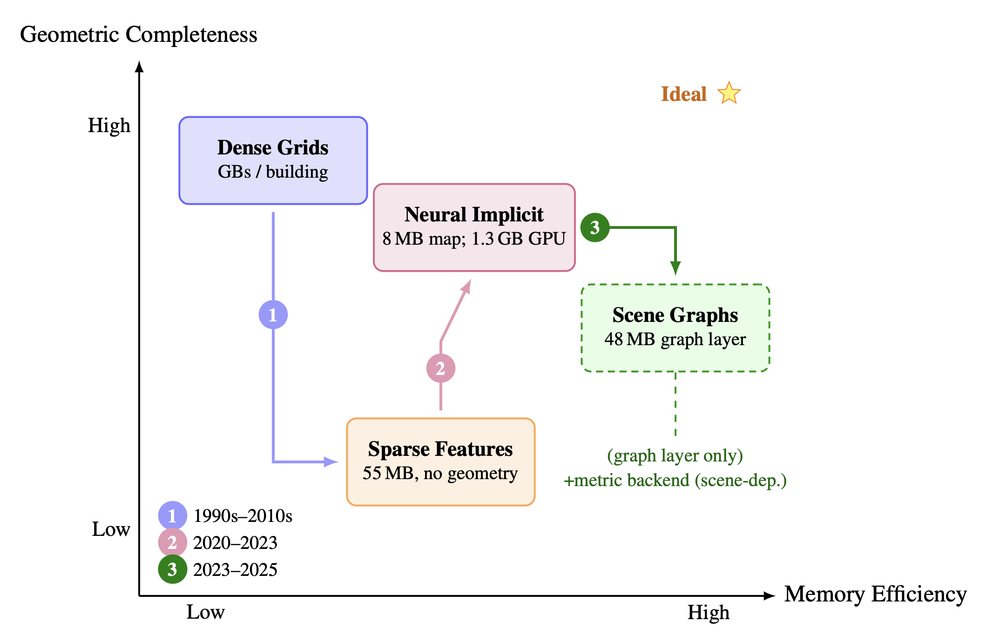
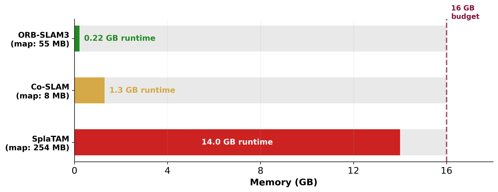
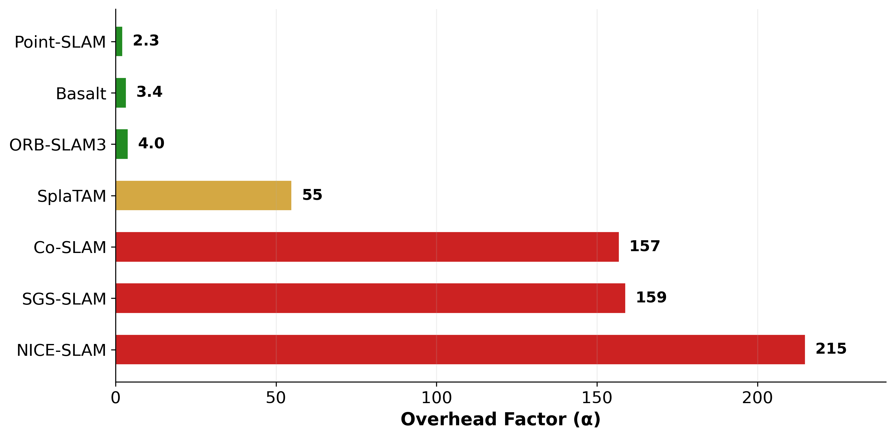
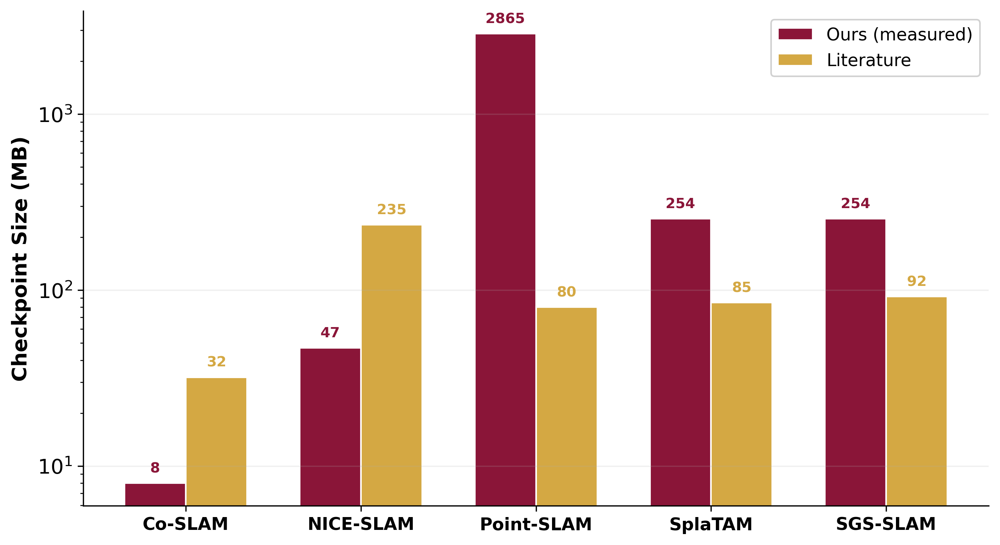
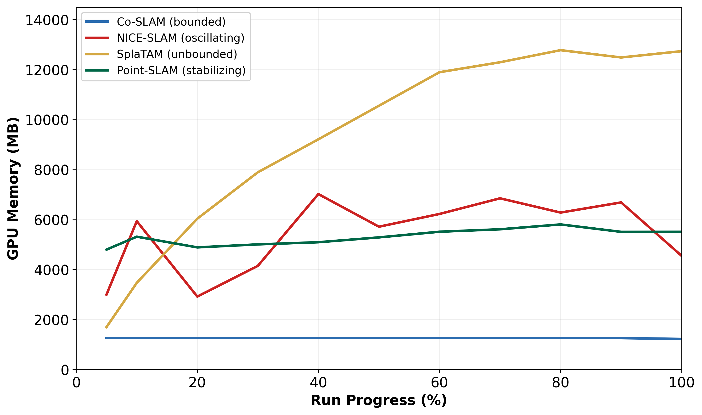
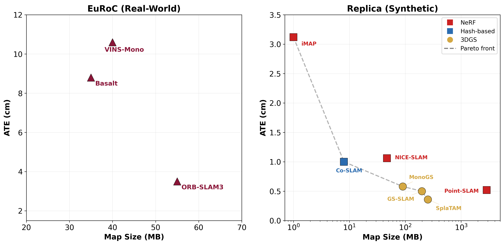

As vision-based robots navigate larger environments, their spatial memory grows without bound, eventually exhausting computational resources, particularly on embedded platforms (8–16 GB shared memory, <30 W) where adding hardware is not an option. This survey examines the spatial memory efficiency problem across 88 references spanning 52 systems (1989–2025), from occupancy grids to neural implicit representations.
We introduce the overhead factor α = Mpeak / Mmap, the ratio of peak runtime memory to saved map size, exposing the gap between published map sizes and actual deployment cost. Independent profiling on an NVIDIA A100 GPU reveals that α spans two orders of magnitude within neural methods alone, ranging from 2.3 (Point-SLAM) to 215 (NICE-SLAM, whose 47 MB map requires 10 GB at runtime), showing that memory architecture, not paradigm label, determines deployment feasibility.

Embedded platforms cannot be upgraded after deployment. How much of the memory budget does each SLAM system actually consume at runtime?

Published map sizes are misleading proxies for deployment cost. To capture the gap between what is saved to disk and what is consumed at runtime, we define:
where Mpeak is the peak runtime memory (CPU RSS or GPU allocation) and Mmap is the persistent checkpoint size on disk. We distinguish αCPU (CPU RSS, used for sparse systems) from αGPU (GPU device allocation, used for neural systems).

The first cross-paradigm comparison of runtime versus persistent memory, spanning sparse, learned-flow, neural, and dense/hierarchical systems with explicit benchmark separation.
| System | Paradigm | ATE (cm) | PSNR (dB) | Map (MB) | Peak (MB) | FPS | α |
|---|---|---|---|---|---|---|---|
| Sparse — EuRoC (real-world, stereo-inertial) | |||||||
| ORB-SLAM3 | Sparse | 3.5 | — | 55 | 220 | 30 | 4.0 |
| Basalt | Sparse (VI) | 8.8 | — | 35 | 120 | 30 | ~3.4 |
| VINS-Mono | Sparse (VI) | 10.6 | — | 40 | — | 20 | — |
| Learned Flow — EuRoC / TUM RGB-D (real-world) | |||||||
| DROID-SLAM | Learned Flow | ~2.0 | — | — | 11,000 | 6 | — |
| Neural — Replica (synthetic, RGB-D) | |||||||
| iMAP | NeRF | 3.12 | 22.1 | 1 | — | 3 | — |
| NICE-SLAM | NeRF | 1.06 | 24.4 | 47 | 10,082 | 2 | 215 |
| Co-SLAM | NeRF | 1.00 | 30.2 | 8 | 1,258 | 16 | 157 |
| Point-SLAM | NeRF | 0.52 | 35.2 | 2,865 | 6,563 | 1 | 2.3 |
| SplaTAM | 3DGS | 0.36 | 34.1 | 254 | 14,024 | — | 55 |
| MonoGS | 3DGS | 0.58 | 38.9 | 90 | — | 3 | — |
| GS-SLAM | 3DGS | 0.50 | 34.3 | 198 | — | 8 | — |
| SGS-SLAM | 3DGS (Sem.) | 0.41 | 34.7 | 254 | 40,330 | 2 | 159 |
| Scale Reference — custom outdoor sequences | |||||||
| GigaSLAM | 3DGS (Hier.) | — | ~24 | — | — | 3 | — |
| Dense / Hierarchical — hardware-dependent | |||||||
| OctoMap | Dense (Octree) | — | — | 45 | — | 10 | — |
| Hydra | Scene Graph | — | — | 48 | — | 5 | — |

Runtime GPU memory on Replica/room0 reveals four distinct growth patterns that map directly onto memory dynamics categories:

Pareto frontier analysis with explicit benchmark separation (EuRoC left, Replica right) shows that the binding constraint differs by paradigm: runtime overhead for compact implicit methods (αGPU = 157, Co-SLAM) vs. map size for dense-point methods (α = 2.3, Point-SLAM).

Given a target platform, the following algorithm computes the largest map the hardware can support. The key insight: work backward from deployment memory constraints using α, not forward from map size benchmarks.
| Constraint | Recommended | α range | Type | Max Map | Avoid |
|---|---|---|---|---|---|
| CPU-only (<8 GB) | Sparse, Octree | 3–5 | CPU | ~4 GB | Neural |
| Embedded GPU (<16 GB) | Sparse, SG | 4–10 | CPU | ~2 GB | Raw 3DGS |
| Dense geometry | TSDF, 3DGS | ~55 | GPU | 290 MB | Sparse only |
| Photo rendering | 3DGS, NeRF | 2–215 | GPU | 75 MB | Occupancy |
| Multi-hour | Submaps, Stream | varies | — | — | Monolithic |
| Semantic | SG, VLM | 4–10 | CPU | — | Geom. only |
The overhead factor α captures an important dimension, but a single ratio is insufficient. We propose four complementary metrics that no surveyed system currently reports:
Current benchmarks (EuRoC, Replica, TUM RGB-D) cover minutes at room-scale. Long-duration benchmarks (≥30 min) recording M(t) and FPS(t) would be a high-impact contribution.
GigaSLAM demonstrates kilometer-scale 3DGS, but true city-scale operation (~107 m3, >100 h, <30 W) remains open. Even at 15× compression, city-scale maps reach multi-gigabyte range without LOD management.
Neural SLAM faces catastrophic forgetting: new observations overwrite weights encoding earlier regions. Information-theoretic criteria for when to forget (e.g., retaining only observations that reduce map entropy) are largely unexplored.
Neural representations return confident outputs for unobserved regions, a critical failure mode for safety-critical planning. Stochastic approaches multiply inference cost, and storing per-element variance doubles map storage.
CLIP embeddings (d=512, 32-bit) cost ~2 GB per million points, adding a memory layer on top of the geometric map. Even compressed, language features add ~50% per-Gaussian overhead. No surveyed paper reports α for semantic systems.
Unified memory architectures (NVIDIA Jetson Orin, Apple Silicon) may reduce α by eliminating duplicate CPU–GPU buffers. Custom ASICs and software optimization narrow the gap but neither achieves full-resolution real-time on stock embedded hardware.
This survey traced spatial memory evolution across over three decades and 88 references around a central finding: map size alone is an unreliable proxy for deployment cost. Our overhead factor α spans two orders of magnitude (αGPU = 2.3–215), revealing that compact implicit methods pay orders-of-magnitude runtime overhead, dense neural point methods embed cost in the map itself, and 3DGS methods inherit high α from unbounded accumulation.
Our profiling covers five neural SLAM systems on a single Replica scene using one GPU (A100). α values may differ on other scenes, datasets, or hardware. Only training-time α is measured; inference-only α remains unprofiled. Benchmark heterogeneity constrains cross-paradigm comparisons to α and scaling behavior.
The authors would like to thank the Engineering Research and Development for Technology (ERDT) program of the Department of Science and Technology – Science Education Institute (DOST-SEI), Philippines, the Office of International Linkages (OIL) of the University of the Philippines Diliman, and the Research Dissemination Grant of the UP Artificial Intelligence Research Program for supporting this work. We are also grateful to the Ubiquitous Computing Laboratory at UP Diliman for providing computational resources.